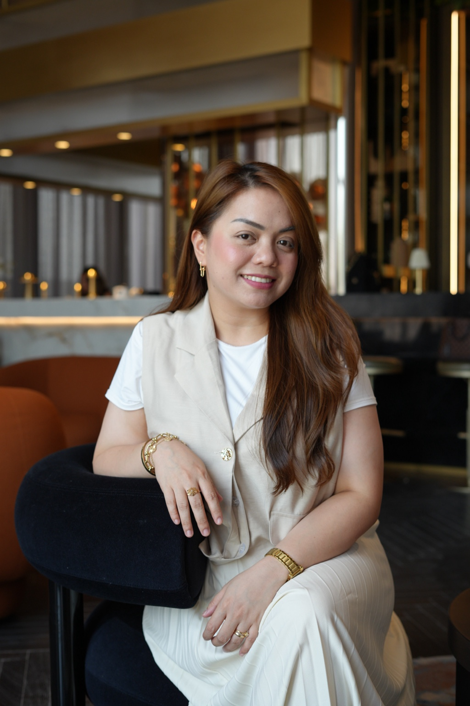

From AED 2,000 to a life I once dreamed of.
I arrived in Dubai at just 19 years old, with big dreams and a starting salary of AED 2,000. I didn't have everything figured out, but I was ready to work, learn and build a future.
Stepping outside my comfort zone helped me discover talents I didn't know I had. I'm especially grateful to the mentors and bosses who believed in me, encouraged me and helped me grow.
Dubai became the place where I developed my career as an HR manager, married my Pakistani husband, became a proud mom and, together, bought a property to call home.
Today I'm balancing corporate life, motherhood, marriage and a new journey as a content creator. Some days are beautiful, some are chaotic, and I'm still learning. I'm sharing this to remind other women and aspiring creators that we all start somewhere.